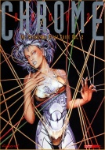

|  | Fiche technique |
| Supplément pour le jeu de rôles Cyberpunk 2020, édité par R. Talsorian Games (1992) | |
| Langue | Français |
| Thème | Catalogue Automne-Hiver |
| Qualité du background | 4 / 5 |
| Qualité des scénarii | - |
| Qualité des règles | 3 / 5 |
| Qualité des illustrations | 3 / 5 |
| Qualité de l'écriture | 3 / 5 |
Voilà le deuxième volume de la série des Chromebooks. Au menu, on a : de la cybernétique, du matériel hi-tech, des armes, des équipes de professionnels de la rue et des véhicules. Ajoutons à cela deux originalités : les full body replacement (remplacement corporel total) où l'apogée du cyborg dans un monde de brutes, et les implants exotiques (où comment se transformer en hybride animal-humain). Le plus de ce supplément réside dans l'originalité de certains objets (lame à mémoire de forme, taser à distance par ionisation de l'air, etc) dont la vraisemblance technologique est intéressante. On nous aura épargné les programmes informatique, ce qui n'est pas un mal, et malgré une irrégularité dans l'intérêt du matériel présenté comme dans celui des illustrations, ce supplément est à mon avis le meilleur des quatre Chromebooks.
{kind=link}